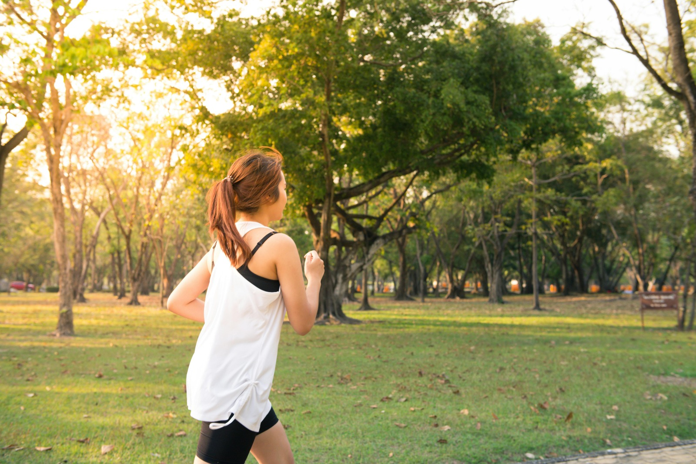

Você conhece todos os benefícios que a prática regular de exercício pode proporcionar?
Muita gente pensa que se exercitar serve apenas para conquistar um corpo bonito e garantir selfies bonitas no instagram. Mas a prática de exercícios físicos vai muito além da estética, você vai se surpreender com o que a atividade física pode fazer com a sua saúde!
A prática regular de atividades físicas, segundo especialistas, é uma grande solução para muitos males de saúde. Uma vida ativa reduz os riscos de doenças crônicas como a hipertensão, derrame, câncer, diabetes tipo dois, osteoporose, osteoartrite e até mesmo a depressão.
Pesquisas feitas nos últimos anos mostraram que a prática de atividades retardam o envelhecimento. Pessoas fisicamente ativas podem ter um corpo mais jovem que sua idade cronológica, comparadas com pessoas da mesma idade que não praticam atividades físicas. Uma pessoa fisicamente ativa pode ter o corpo comparado com o de uma pessoa de até 10 ou 20 anos mais jovem. O corpo de quem se exercita regularmente é mais saudável e eficiente, comparado com o de uma pessoa sedentária.
Manter uma vida fisicamente ativa além dos benefícios físicos, a prática de exercícios pode promover o alívio de estresse, ajudando também a diminuir sintomas de depressão e ansiedade, além de ajudar na prevenção no aparecimento dessas doenças. Isso porque, os exercícios físicos ajudam na liberação de endorfinas, hormônios responsáveis pelo bem-estar, que aliviam a tensão e promovem sensações de prazer e relaxamento. Além disso, a atividade física ajuda a diminuir os níveis de cortisol, o hormônio associado ao estresse, ajudando no equilíbrio do sistema nervoso.
Já o sedentarismo, está associado com o sobrepeso e a obesidade, o que causa milhares de mortes de todo ano. As pessoas com obesidade têm mais chances de desenvolverem doenças crônicas, desde a osteoporose, doenças cardíacas, hipertensão, diabetes até mesmo câncer.
As pessoas sedentárias têm maiores riscos de desenvolverem doenças crônicas que reduzem a qualidade e a expectativa de vida, além de afetarem a saúde a longo prazo. Deixar a preguiça de lado e construir hábitos de praticar exercícios é a melhor escolha para quem quer viver com mais qualidade, longevidade e preservar a juventude por mais tempo.
Manter uma vida fisicamente ativa é um dos melhores investimentos para garantir saúde e bem-estar ao longo da vida. Os benefícios que a prática de exercícios físicos promovem são inúmeros, com destaque principalmente para a prevenção e controle de doenças crônicas, como diabetes e hipertensão. Doenças que atingem milhões de brasileiros, e alarmantemente, o número de pessoas afetadas por essas doenças só aumentam a cada ano..
No entanto, nem todos conseguem desfrutar desses benefícios. Existem diversos fatores que dificultam a criação e a manutenção desse hábito na rotina. Os adultos são os que mais têm dificuldade em aderir os exercícios no dia a dia. A falta de tempo, responsabilidades, trabalho e a família, criam uma rotina onde os exercícios ficam em segundo plano.
A falta de estrutura adequada, como academias próximas, o custo financeiro de academias e equipamentos, a falta de orientação profissional adequada, a ausência de apoio de familiares, amigos ou de um grupo de treino, somado a sentimentos de desconforto ou intimidação no ambiente de treino, são obstáculos comuns que dificultam ainda mais a adesão aos exercícios físicos. Esses fatores diminuem a motivação para começar e manter uma rotina de atividades físicas, tornando esse processo ainda mais desafiador.
Uma pesquisa realizada em 2023 mostrou que a taxa de desistência de academias e extremamente alta, mais da metade das pessoas desistem entre o terceiro e o quinto mês, até o sexto mês a taxa aumenta para 65%. Os principais motivos para a desistência incluem falta de motivação, interesse, tempo e suporte social. Além disso, muitas academias não conseguem oferecer um ambiente acolhedor e motivador, o que faz com que muitos desistam.
E para aqueles que querem adotar uma rotina de exercícios na rotina com praticidade, sem sair de casa, especialistas dão dicas de estratégias simples, mas eficazes. Pequenas mudanças na rotina podem ajudar a criar um hábito duradouro. Movimentos simples como agachamentos e flexões abdominais são práticos eficazes e não exigem aparelhos, além de promoverem diversos benefícios como fortalecimento muscular e fortalecimento das articulações. Além disso, esses exercícios ajudam a melhorar o equilíbrio, corrigem a postura e fortalecem a coluna, prevenindo dores e lesões na lombar, entre muitos outros benefícios.
Outra recomendação é mudar hábitos cotidianos simples, como preferir escadas do que elevadores, caminhar ou correr ao ar livre também são maneiras práticas de incluir atividades físicas na rotina com praticidade.
Mas para quem deseja ter um acompanhamento profissional de perto sem gastar rios de dinheiros com personal trainer, existe a solução perfeita para você. A natflix é uma plataforma online que oferece acompanhamento profissional de perto, com treinos focados em todos os grupamentos musculares para você treinar tanto em casa quanto na academia.
Seja qual for seu objetivo, empinar e desenvolver o glúteo, definir o abdômen, desenvolver as pernas ou desenhar os membros superiores. A natflix tem treinos para todas as modalidades, para todos os objetivos, tanto para iniciantes quanto para quem já tem experiência.
Além de um acompanhamento constante, você também pode contar com uma rede de apoio motivacional que vai te ajudar durante toda a sua jornada na construção de uma vida mais saudável.
A Natflix tem todos esses benefícios, e muitos outros que vão te ajudar a criar habitos saudáveis, que vão te dar mais qualidade de vida, além de te ajudar a conquistar o corpo dos seus sonhos, com a orientação e o suporte necessários. Clique aqui e inscreva-se agora as vagas são limitadas!